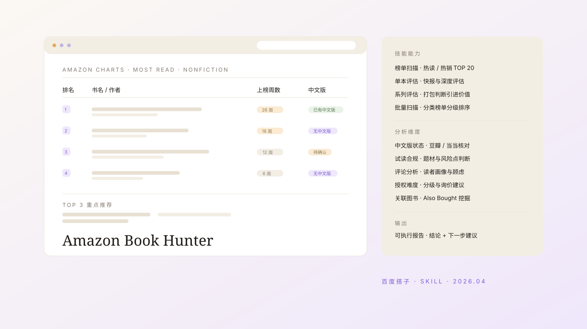

AI 技能 · 版权引进
亚马逊选题开发skill
我用百度搭子做的第一个技能。它把「一本外版书值不值得引进」的判断拆成可以重复执行的流程：先看榜单，再核中文版，最后给出授权难度与下一步建议。
- 时间
- 2026.04
- 角色
- 独立完成 · 提示词与流程设计
- 形态
- 百度搭子（DuMate）自定义技能
- 面向
- 出版社外版书版权引进 · 选题开发
- 工作模式
- 榜单扫描 · 单本快评 · 单本深度 · 系列评估 · 批量扫描
- 分析维度
- 上榜周数 · 中文版状态 · 试读合规 · 评论画像 · 授权难度 · 关联图书
- 输出
- 榜单扫描报告 · 引进评估快报 · 深度评估报告

背景 / 问题
选题会上常见的问题是：一本外版书到底值不值得引进。判断依据往往散落在榜单排名、读者评论、版权代理和国内对标书之间，每换一个人、每换一本书，标准就漂移一次。
我不想每次都重新解释一遍判断逻辑，所以把它做成了一个技能：把亚马逊的可采集数据、中文版核对渠道、试读合规检查和授权难度分级固化成同一套流程，让每次筛选都在同一把尺子下完成。
我的工作
- 拆出五个工作模式并按场景分工：日常筛选用榜单扫描，重点选题走深度评估，系列书打包判断，大规模选题库分批扫描。
- 把每个模式写成明确的执行步骤与采集清单，减少每次重复交代要什么数据。
- 设计个性化配置（config.md）：社内选题方向、偏好设置、常用版权代理、报告详细程度，让技能按社内口径说话。
- 补一张常见问题处理表：页面需登录、排名数据缺失、试读不可访问、系列信息复杂时的降级方案。
关键设计与判断逻辑
- 榜单入口：以 Amazon Charts 的热读榜 / 热销榜为主入口，兼顾 Best Sellers 分类榜单，扫描默认取 TOP 20。
- 市场验证：把上榜周数、排名变化、评分与评论数当作市场验证的代理指标，13 周以上视为长销信号，26 周以上视为现象级。
- 中文版核对：豆瓣优先、当当次之；先确认是否已有中文版或仅有英文原版条目，再决定进入哪一轮评估。
- 试读合规：对试读内容做合规检查（政治、宗教、暴力、毒品、歧视等），标出风险点、题材匹配度与建议译名。
- 授权难度：按出版社类型分成高 / 中 / 低三级，并给出询价对象建议——版权代理、出版社版权部门，或直接联系作者。
- 输出模板：结论、核心理由、下一步建议分开写；数据一律标注采集时间。
成果与边界
- 产出：一份可以直接拿去和编辑讨论的报告——榜单扫描报告、引进评估快报、深度评估报告三类。
- 我的收获：第一次完整地把自己的判断标准写成流程，也第一次体会到「提示词其实是在做编辑规范」。
- 边界：版权状态与排名数据都有时效性，报告里只写「需确认」与采集时间，不替版权方下结论。
下载这个 skill
这套流程已打包成可安装的 AI 技能，下载后放进你的技能目录即可复用；如果你也在做外版书引进，欢迎一起讨论它还缺什么。